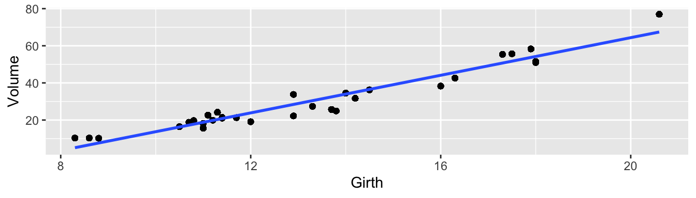

Chapter 19 Speeding up R
library(microbenchmark) # for measuring how long stuff takes
library(doMC) # do multi-core stuff
library(foreach) # parallelizable for loops
library(tidyverse) # dplyr, ggplot2, etc...
library(faraway) # some examples
library(boot)
library(caret)
library(glmnet)There is a YouTube Video Lecture for this chapter.
Eventually if you have large enough data sets, an R user eventually writes code that is slow to execute and needs to be sped up. This chapter tries to lay out common problems and bad habits and shows how to correct them. However, the correctness and maintainability of code should take precedence over speed. Too often, misguided attempts to obtain efficient code results in an un-maintainable mess that is no faster that the initial code.
Hadley Wickham has a book aimed at advanced R user that describes many of the finer details about R. One section in the book describes his process for building fast, maintainable software projects and if you have the time, I highly suggest reading the on-line version, Advanced R.
First we need some way of measuring how long our code took to run. For this we will use the package microbenchmark. The idea is that we want to evaluate two or three expressions that solve a problem.
# The expressions can be as many lines as you'd like, enclosed by { }.
# For a single line, you can skip the enclosing { }.
#
# For evaluating large chunks of code, I like to
# just wrap the code up in a function.
x <- runif(1000) # x vector of 1000 numbers between 0 and 1.
microbenchmark(
sqrt(x), # First expression to compare
x^(0.5) # second expression to compare
) %>% print(digits=3)## Unit: microseconds
## expr min lq mean median uq max neval cld
## sqrt(x) 2.22 2.4 3.31 2.64 3.39 12.6 100 a
## x^(0.5) 24.72 25.6 31.95 26.01 32.89 131.4 100 bWhat microbenchmark does is run the two expressions a number of times and then
produces the 5-number summary of those times. By running it multiple times (by
default, 100 times), we
account for the randomness associated with a operating system that is also running
at the same time. Being good statisticians, the cld column stands for compact
letter display and if the letters are different, there is a statistically
significant difference in the timing. If we cause the microbenchmark() function to
run more times (1000s or 100,000s times), we could eventually end up with the smallest
difference to be statistically significant, but I think we shouldn’t complain about
speed differences if a sample of 100 runs can’t detect the difference.
19.1 Faster for loops?
Often we need to perform some simple action repeatedly. It is natural to write
a for loop to do the action and we wish to speed the up. In this first case,
we will consider having to do the action millions of times and each chunk of
computation within the for takes very little time.
Consider frame of 4 columns, and for each of \(n\) rows, we wish to know which column has the largest value.
make.data <- function(n){
data <- data.frame(
Norm = rnorm(n, mean=5, sd=2),
Pois = rpois(n, lambda = 5),
Gamma = rgamma(n, shape = 2, scale = 3),
Exp = rexp(n, rate = 1/5))
return(data)
}
data <- make.data(6)
data## Norm Pois Gamma Exp
## 1 5.079136 7 0.7644054 2.780193
## 2 5.598038 5 7.7653753 1.231766
## 3 3.707923 2 8.6443491 11.591930
## 4 4.661450 7 1.7702589 1.181605
## 5 5.312595 3 5.2059087 9.864848
## 6 9.158192 6 7.9529147 1.590383The way that you might first think about solving this problem is to write a for loop and, for each row, figure it out.
f1 <- function( input ){
output <- NULL
for( i in 1:nrow(input) ){
output[i] <- which.max( input[i,] )
}
return(output)
}We might consider that there are two ways to return a value from a function
(using the return function and just printing it). In fact, I’ve always heard
that using the return statement is a touch slower.
f2.noReturn <- function( input ){
output <- NULL
for( i in 1:nrow(input) ){
output[i] <- which.max( input[i,] )
}
output
}## Unit: milliseconds
## expr min lq mean median uq max neval cld
## f1(data) 43.9 46.6 52.9 49.2 52.8 176 100 a
## f2.noReturn(data) 44.2 46.6 50.6 48.3 51.4 105 100 aIn fact, it looks like it is a touch slower, but not massively compared to the run-to-run variability. I prefer to use the return statement for readability, but if we agree have the last line of code in the function be whatever needs to be returned, readability isn’t strongly effected.
We next consider whether it would be faster to allocate the output vector once we figure out the number of rows needed, or just build it on the fly?
f3.AllocOutput <- function( input ){
n <- nrow(input)
output <- rep(NULL, n)
for( i in 1:nrow(input) ){
output[i] <- which.max( input[i,] )
}
return(output)
}data <- make.data(10000) # Moderately large sample size
microbenchmark(
f1(data),
f3.AllocOutput(data)
) %>% print(digits=3)## Unit: milliseconds
## expr min lq mean median uq max neval cld
## f1(data) 441 470 545 482 523 2484 100 a
## f3.AllocOutput(data) 454 477 545 506 546 1440 100 aThere isn’t a significant improvement allocating the size of output first. So given this, we shouldn’t feel to bad being lazy and using output <- NULL to initialize things.
19.2 Vectorizing loops
In general, for loops in R are very slow and we want to avoid them as much as possible. The apply family of functions can be quite helpful for applying a function to each row or column of a matrix or data.frame or to each element of a list.
To test this, instead of a for loop, we will use apply.
f4.apply <- function( input ){
output <- apply(input, 1, which.max) # 1 = apply to rows
return(output)
}## Unit: microseconds
## expr min lq mean median uq max neval
## f1(data) 3638 4223 5169 4697 5506 10765 100
## f4.apply(data) 282 340 478 391 516 2959 100This is the type of speed up that matters. We have a 10-fold speed up in execution time and particularly the maximum time has dropped impressively.
Unfortunately, I have always found the apply functions a little cumbersome and I prefer to use dplyr functions for readability. For this example, we’ll compare summarizing each column by calculating the mean.
First for a small sample sized data:
data <- make.data(1000)
microbenchmark(
data %>% apply(2, mean),
data %>% summarize_all(mean)
) %>% print(digits=3)## Unit: microseconds
## expr min lq mean median uq max neval cld
## data %>% apply(2, mean) 243 280 369 337 413 855 100 a
## data %>% summarize_all(mean) 724 915 1334 1192 1429 7023 100 bUnfortunately dplyr is a lot slower than apply in this case. I wonder if the dynamics would change with a larger n?
data <- make.data(1000000)
microbenchmark(
data %>% apply(2, mean),
data %>% summarize_all(mean)
) %>% print(digits=3)## Unit: milliseconds
## expr min lq mean median uq max neval cld
## data %>% apply(2, mean) 67.1 81.1 151.9 97.0 190.5 677 100 b
## data %>% summarize_all(mean) 9.6 11.1 16.9 12.9 18.8 123 100 a## Norm Pois Gamma Exp
## 5.000913 5.000311 6.007382 4.993895## Norm Pois Gamma Exp
## 1 5.000913 5.000311 6.007382 4.993895f5.dplyr <- function( input ){
input %>%
rowwise() %>% # equivalent to group_by( each row )
mutate( max.col=which.max(c(Norm, Pois, Gamma, Exp) ) ) %>%
pull(max.col) %>%
return()
}What just happened? The package dplyr is designed to work well for large data sets, and utilizes a modified structure, called a tibble, which provides massive benefits for large tables, but at the small scale, the overhead of converting the data.frame to a tibble overwhelms any speed up. But because the small sample case is already fast enough to not be noticeable, we don’t really care about the small n case.
19.3 Parallel Processing
Most modern computers have multiple computing cores, and can run muliple processes at the same time. Sometimes this means that you can run multiple programs and switch back and forth easily without lag, but we are now interested in using as many cores as possible to get our statistical calculations completed by using muliple processing cores at the same time. This is referred to as running the process “in parallel” and there are many tasks in modern statistical computing that are “embarrassingly easily parallelized”. In particular bootstrapping and cross validation techniques are extremely easy to implement in a parallel fashion.
However, running commands in parallel incurs some overhead cost in set up computation, as well as all the message passing from core to core. For example, to have 5 cores all perform an analysis on a set of data, all 5 cores must have access to the data, and not overwrite any of it. So parallelizing code only makes sense if the individual steps that we pass to each core is of sufficient size that the overhead incurred is substantially less than the time to run the job.
We should think of executing code in parallel as having three major steps: 1. Tell R that there are multiple computing cores available and to set up a useable cluster to which we can pass jobs to. 2. Decide what ‘computational chunk’ should be sent to each core and distribute all necessary data, libraries, etc to each core. 3. Combine the results of each core back into a unified object.
19.4 Parallel Aware Functions
There are many packages that address problems that are “embarrassingly easily parallelized” and they will happily work with multiple cores. Methods that rely on re-sampling certainly fit into this category.
The first step is letting R know it has access to multiple cores. This is quite simple using the doMC package (aka the do Multi-Core package).
The registration of multiple cores is actually pretty easy.
19.4.1 boot::boot
Bootstrapping relies on re-sampling the dataset and calculating test statistics from each re-sample. In R, the most common way to do this is using the package boot and we just need to tell the boot function, to use the multiple cores available. (Note, we have to have registered the cores first!)
# make the trees dataset a bit larger,
# just so the overhead cost isn't as large
# compared to the computation of the regression
# coefficients.
for(i in 1:4){
trees <- rbind(trees, trees)
}
# define the model using the original sample data
model <- lm( Volume ~ Girth, data=trees)
# define a function that calculates the model parameters
# given an index of which data points to use.
my.fun <- function(df, index){
model.star <- lm( Volume ~ Girth, data= trees[index,] )
model.star$coefficients
}
# the boot::boot() function has a parallel option we just need
# to switch on
microbenchmark(
serial = boot::boot( trees, my.fun, R=1000 ),
parallel = boot::boot( trees, my.fun, R=1000,
parallel='multicore', ncpus=2 )
) %>% print(digits=3)## Unit: milliseconds
## expr min lq mean median uq max neval cld
## serial 829 898 985 931 1076 1554 100 b
## parallel 629 653 759 675 739 1391 100 aIn this case, we had a bit of a speed up, but not a factor of 2. This is due to the overhead of splitting the job across both cores.
19.4.2 caret::train
The statistical learning package caret also handles all the work to do cross validation in a parallel computing environment. The functions in caret have an option allowParallel which by default is TRUE, which controls if we should use all the cores. Assuming we have already registered the number of cores, then by default caret will use them all.
library(caret)
# Remember to register how many cores to use!
doMC::registerDoMC(cores = 2) # my laptop only has two cores.
caret.model <- function(parallel){
grid <- data.frame(
alpha = 1, # 1 => Lasso Regression
lambda = exp(seq(-6, 1, length=50)))
ctrl <- trainControl(
method='repeatedcv', number=5, repeats=4,
preProcOptions = c('center','scale'),
allowParallel = parallel)
model <- train(
lpsa ~ . -svi, data=prostate, method='glmnet',
trControl=ctrl,
tuneGrid=grid,
lambda = grid$lambda )
return(model)
}
# make the dataset a bit larger, just so the overhead
# of moving to multi-core doesn't overwhelm the benefits
# of using two processors. You should never do this
# in a real analysis!
data('prostate', package='faraway')
for( i in 1:7 ){
prostate <- rbind(prostate,prostate)
}
microbenchmark(
caret.model(parallel = FALSE),
caret.model(parallel = TRUE )
) %>% print(digits=3)## Unit: seconds
## expr min lq mean median uq max neval cld
## caret.model(parallel = FALSE) 2.68 2.72 2.87 2.77 2.91 4.42 100 b
## caret.model(parallel = TRUE) 1.98 2.05 2.19 2.09 2.20 3.94 100 aAgain, we saw only moderate gains by using both cores, however it didn’t really cost us anything. Because the caret package by default allows parallel processing, it doesn’t hurt to just load the doMC package and register the number of cores. Even in just the two core case, it is a good habit to get into so that when you port your code to a huge computer with many cores, the only thing to change is how many cores you have access to.
19.5 Parallelizing for loops
One of the easiest ways to parallelize a for loop is using a package called foreach. This package was created by R-Revolutions company that was subsequently bought by Microsoft. They have a nice introduction to the package here.
We will consider an example that is common in modern statistics. We will examine parallel computing utilizing a bootstrap example where we create bootstrap samples for calculating confidence intervals for regression coefficients.
## `geom_smooth()` using formula 'y ~ x'
This is how we would do this previously.
# f is a formula
# df is the input data frame
# M is the number of bootstrap iterations
boot.for <- function( f, df, M=999){
output <- list()
for( i in 1:100 ){
# Do stuff
model.star <- lm( f, data=df %>% sample_frac(1, replace=TRUE) )
output[[i]] <- model.star$coefficients
}
# use rbind to put the list of results together into a data.frame
output <- sapply(output, rbind) %>% t() %>% data.frame()
return(output)
}We will first ask about how to do the same thing using the function foreach
# f is a formula
# df is the input data frame
# M is the number of bootstrap iterations
boot.foreach <- function(f, df, M=999){
output <- foreach( i=1:100 ) %dopar% {
# Do stuff
model.star <- lm( f, data=df %>% sample_frac(1, replace=TRUE) )
model.star$coefficients
}
# use rbind to put the list of results together into a data.frame
output <- sapply(output, rbind) %>% t() %>% data.frame()
return(output)
}Not much has changed in our code. Lets see which is faster.
microbenchmark(
boot.for( Volume~Girth, trees ),
boot.foreach( Volume~Girth, trees )
) %>% print(digits=3)## Unit: milliseconds
## expr min lq mean median uq max neval cld
## boot.for(Volume ~ Girth, trees) 302 335 388 354 389 790 100 a
## boot.foreach(Volume ~ Girth, trees) 272 327 406 338 393 1232 100 aIn this case, the overhead associated with splitting the job across two cores, copying the data over, and then combining the results back together was more than we saved by using both cores. If the nugget of computation within each pass of the for loop was larger, then it would pay to use both cores.
# massiveTrees has 31000 observations
massiveTrees <- NULL
for( i in 1:1000 ){
massiveTrees <- rbind(massiveTrees, trees)
}
microbenchmark(
boot.for( Volume~Girth, massiveTrees ) ,
boot.foreach( Volume~Girth, massiveTrees )
) %>% print(digits=3)## Unit: seconds
## expr min lq mean median uq max
## boot.for(Volume ~ Girth, massiveTrees) 14.2 14.87 15.35 15.21 15.58 21.3
## boot.foreach(Volume ~ Girth, massiveTrees) 7.7 8.73 9.12 9.02 9.33 11.7
## neval cld
## 100 b
## 100 aBecause we often generate a bunch of results that we want to see as a data.frame, the foreach function includes a .combine option which allows us to specify a function to do the combining.
output <- foreach( i=1:1000, .combine=rbind ) %dopar% {
# Do stuff
model.star <- lm( Volume ~ Girth, data= trees %>% sample_frac(1, replace=TRUE) )
model.star$coefficients %>% t() %>% as.data.frame()
}It is important to recognize that the data.frame trees was utilized inside the foreach loop. So when we called the foreach loop and distributed the workload across the cores, it was smart enough to distribute the data to each core. However, if there were functions that we utilized inside the for loop that came from a package, we need to tell each core to load the function.